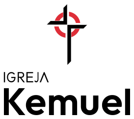

FOTO DA IGREJA
[Categoria]
[Título do post]
[Data]
Uma comunidade de fé de portas abertas para você e sua família viverem mais perto de Deus.
Uma ação principal por bloco.
Primeiro o celular. Sempre a leitura.
Contraste e foco fazem parte.
Movimento finito. Atmosferas pausáveis.
01 / TIPOGRAFIA
Quatro famílias autorizadas: Outfit para títulos e números; Public Sans para texto e interface; Anton, terceira família, somente para títulos grandes condensados em caixa alta; Newsreader, quarta família, restrita à visita editorial, às páginas da Bíblia e a citações. A vaga serifada já está ocupada: nenhuma quinta família pode entrar. Todas têm licença OFL, arquivos locais e font-display: swap.
Outfit aproxima a construção geométrica e o peso do lettering observado, sem substituir nem recriar o logo. Anton acrescenta hierarquia condensada à ficha de primeira visita. Newsreader foi desenhada para leitura em tela e preserva o ritmo da Bíblia já publicada; não substitui Public Sans na interface nem no corpo geral do site.
Tamanhos medidos ao vivo. Escala fluida com clamp(); pesos reais dos arquivos variáveis. Tracking em px conforme o tamanho atual. As prévias são os próprios elementos.
Uma abertura curta convida à leitura.
O texto principal usa linhas confortáveis, contraste alto e palavras claras.
Informações de apoio continuam legíveis.
Legenda · contexto que ajuda a compreender.
Categoria do conteúdo
Um detalhe que orienta
“[Citação a inserir após revisão.]”
Títulos: Outfit, pesos 400–800. Texto: Public Sans, pesos 400–700. Os pesos usados no sistema são 400, 500, 600, 700 e 800. Corpo com entrelinha 1,65; títulos com 1,12; hero com 1,02. Maiúsculas ficam nos rótulos curtos.
Somente o lettering vazado usa Outfit Kemuel Static, derivado estático no mesmo peso 800 com contornos unidos, para evitar as costuras que text-stroke expõe na fonte variável. O título da hero usa o token --tracking-display de -0.015em; o restante da escala mantém seu espaçamento.
Fontes em assets/fonts/; licenças outfit-OFL.txt, outfit-static-OFL.txt e publicsans-OFL.txt. Fallback: Arial e sans-serif. Caracteres portugueses incluídos no subconjunto latino. Tokens em css/tokens.css.
02 / CORES
Vermelho em ações principais, marcadores e estados. Branco é a base; preto organiza os destaques. Verde e âmbar são exclusivos de feedback, sempre acompanhados de texto.
Média de 161 pixels internos do círculo: RGB 234,8323 / 48,6398 / 59,6149; arredondado #EB313C. Branco nessa amostra: 4,17:1, abaixo de AA para texto normal.
O fator uniforme 0,947 nos canais sRGB resulta em #DE2E38, com 4,61:1. Ajuste somente para legibilidade. Substituir --color-red quando o código oficial chegar. A imagem de referência não integra o site.
Referência local: referencias/marca-kemuel/logo-referencia.jfif, 447 × 447px. Região do círculo: x 51–108, y 170–223; seleção cromática erodida em 2px para afastar bordas. O print JPEG limita a precisão da amostra.
--color-primary e --color-accent apontam para --color-red. --color-surface e --color-on-dark usam branco; texto principal usa #171717. Texto secundário usa #555555 no claro e #C5C5C5 no escuro. --color-focus usa o vermelho no claro; sobre escuro, o contorno é branco.
Hover: #C1232C. Ativo: #A51D25. Desabilitado: texto #595959 sobre #E5E5E5, sem reduzir opacidade. Bordas de controles usam #767676; #D4D4D4 fica em divisores decorativos. Transparências são superfícies e detalhes, nunca texto com contraste incerto.
Fotos futuras recebem gradiente escuro de no mínimo 60% de preto em toda a área do texto. A amostra usa somente um bloco neutro. Lettering vazado é reservado à hero; seu contorno é branco sobre preto, com alternativa sólida em modo de alto contraste.
Luminância relativa sRGB: (L maior + 0,05) / (L menor + 0,05). Todas as combinações são avaliadas para texto normal: AA ≥ 4,5:1; AAA ≥ 7:1. Os valores vêm dos tokens em uso, sem arredondar antes da classificação.
| Aplicação | Texto / fundo | Contraste | Resultado |
|---|
As demais cores servem a bordas, luzes ou superfícies. Usar somente as combinações textuais desta matriz. Ícones informativos e foco precisam de pelo menos 3:1; o sistema usa contornos de controles com contraste de 4,54:1 no branco.
03 / COMPONENTES
Componentes preparados para as três fases do site. Os estados abaixo são amostras visuais; o hover e o foco reais também funcionam. Nenhum exemplo envia dados ou acessa serviços externos.
Componente · k-hero-led
A demonstração no topo e o index.html usam exatamente a mesma marcação, os mesmos tokens e os mesmos componentes. A palavra KEMUEL é tipografia decorativa em Outfit, não o logo. Dentro da hero não há logo nem repetição do nome: o logo fica só no cabeçalho.
Camadas: atmosfera existente → bordas em nuvem → máscara de pontos → cruz, palavra cinza e luz de vitral em CSS, recortadas pela malha → véu leve de 15% → sombra radial localizada atrás do texto → título, subtítulo e ações. A palavra usa até 88vw (KEMUEL mede 4,005em) e fica no fundo, atrás do conteúdo centralizado. Pontos fluidos: raio de 1,2px no celular e 0,8px no desktop; passo de 4px e 3px. Luz de vitral: dois feixes diagonais âmbar (12s e 14s, defasados) e uma mancha de leve tom vermelho (12s) deslizam e mudam de intensidade; no celular, um feixe só. Cruz de luz genérica, com hastes alinhadas, diferente da cruz do logo, atrás da palavra e levemente acima do centro, respirando em 8s. Os pontos acendem por onde a luz passa e voltam ao cinza. A palavra respira de 0,8 a 1 de opacidade em 6s. O token --hero-led-amber é restrito a esta atmosfera: não é cor de interface, botão ou texto, e o vermelho continua sendo o único acento. Desfoque estático. Só transform e opacity animam, sempre em linear. Com mouse, a malha ondula ao redor do cursor, como água mexida: passe o ponteiro na demonstração no topo. Sem WebGL, canvas, bibliotecas, imagens ou scripts externos.
Sem eyebrow. Ações: "Como chegar", primária, e "Cursos e materiais gratuitos", secundária; no celular, uma embaixo da outra, em largura total. "Planeje sua visita" fica só no cabeçalho. Reutiliza k-container, k-lettering (Outfit Kemuel Static 800 sem costuras), k-button, k-button--secondary, k-enter e a atmosfera da hero. Cores, fontes, espaços, raios, easing e durações de interface vêm do sistema. Geometria, malha, máscaras e transparências específicas usam os tokens --hero-led-* em tokens.css.
Contraste medido nos pixels atrás do texto, com a luz em cinco pontos do ciclo e também com fundo totalmente branco, simulando o vídeo: título a partir de 8,86:1; subtítulo e apoio #C5C5C5 a partir de 12,17:1. Primário branco sobre vermelho: 4,61:1 (AA). Se o bloco de texto mudar de tamanho, medir de novo. Não remover a sombra nem aplicar opacidade ao conteúdo.
Filtro SVG (feTurbulence e feDisplacementMap) aplicado só em k-hero-led__mesh, restrito à área ao redor do cursor; título, subtítulo, horários e botões ficam em outra camada e nunca deformam. Tokens: --hero-led-water-scale, -radius, -calm, -frequency, -flow, -flow-period e -gain. requestAnimationFrame só roda enquanto há ondulação; parado, o filtro é retirado e nada é calculado. Só com (hover: hover) and (pointer: fine); desligado com movimento reduzido, aba oculta ou hero fora da tela.
O template inerte contém video autoplay muted loop playsinline preload="metadata", sem áudio. Nenhuma mídia é solicitada no padrão CSS. Após instalar todos os arquivos, adicionar data-video-enabled à section k-hero-led, tanto aqui quanto na página. ui.js resolve os caminhos a partir de assets/, independentemente da página.
assets/video/hero.webm e assets/video/hero.mp4: desktop, 1280px de largura, até 3 MB por arquivo.assets/video/hero-mobile.mp4: abaixo de 768px, 720px de largura, até 1,5 MB.O vídeo substitui a luz e mantém palavra, nuvem, pontos, filtro monocromático e proteção do texto. Só aparece depois de começar a tocar; falha ou bloqueio de autoplay preserva o CSS. IntersectionObserver pausa luz e vídeo fora da tela; aba oculta pausa também. Movimento reduzido mantém palavra e malha estáticas, sem iniciar nem carregar vídeo. Sem IntersectionObserver, o fundo permanece estático.
Regra: movimento contínuo somente nas atmosferas autorizadas: fundo da hero e respiração do brilho da história. Título e ações permanecem legíveis com CSS estático, sem vídeo ou sem JavaScript. Os textos entre colchetes são pendências, não informações reais da igreja.
Componente · k-schedule
Dois blocos lado a lado, ou um embaixo do outro quando cada bloco ficaria abaixo de --schedule-item-min. Cada bloco: ícone k-clock e tracinho vermelho decorativo, dia no estilo k-eyebrow, horário em Outfit (--text-schedule-time) no formato brasileiro, como 19h30 ou 18h, e rótulo. Os horários vêm de dados/igreja.json, preenchidos pelo script de montagem. O vermelho fica só no tracinho, conforme a regra da cor. Use apenas horários confirmados e não invente nomes de culto.
Variante clara · k-schedule
Variante escura · k-schedule--dark
Contraste: texto #171717 e apoio #555555 sobre branco; branco e apoio #C5C5C5 sobre #111111. Todos acima de AA.
História · capítulos manuais
k-timeline organiza introdução fixa e lista à direita a partir de 900px; abaixo disso, o mesmo palco entra no card ativo, acima do texto completo. k-timeline-card combina botão com aria-expanded/aria-controls, painel associado, marcador e estados normal, ativo, hover, foco e futuro tracejado. Capítulo 01 começa ativo; clique, toque, Enter, Espaço e setas para cima/baixo selecionam. Não há troca automática. Experimentar a linha do tempo.
k-story-stage reserva 4:3, legenda protegida e um único palco movido pelo DOM. k-story-scene separa brilho, malha de pontos e grupos SVG. Os quatro SVGs e textos foram autorizados do protótipo aprovado para esta dobra; CSS e JavaScript foram reescritos para a Kemuel. Fonte canônica em partials/story-scenes.html, aplicada aos marcadores story-scenes pelo script de montagem; não editar os blocos gerados.
Para usar de 3 a 6 capítulos, editar somente a lista HTML e escolher data-story-art: sala, predio, portas ou horizonte. A quantidade, os botões e seus destinos são lidos da lista; IDs de instâncias e gradientes ficam únicos. O status aria-live anuncia apenas seleções manuais. Sem JavaScript, todos os textos continuam visíveis e o palco é omitido. Os comentários “O que contar aqui” orientam o conteúdo futuro e não são exibidos.
Para uma foto real, instalar assets/img/historia/capitulo-01.webp (ou equivalente) e só então adicionar ao li data-story-photo="img/historia/capitulo-01.webp" e data-story-alt descritivo. O caminho parte de assets/ nas duas páginas. Foto substitui o SVG, recebe preto e branco, contraste estático e a mesma malha; sua entrada usa apenas o zoom curto. Nenhuma foto futura é buscada por suposição.
Tokens novos somente em --timeline-*: composição, estados, rail/marcadores, palco/legenda, tinta/transparências, malha derivada da hero, movimentos e tratamento de foto. Cards futuros usam texto #9B9B9B, sem reduzir a opacidade do card inteiro. Legenda tem proteção preta de pelo menos 80%, inclusive sobre foto branca. Cores de ação, fontes, badge, eyebrow, foco e revelação vêm do sistema.
Movimento: troca em 480ms, texto em 260ms, cenas em 1.600ms. Só transform e opacity animam; máscara, filtros, cores e dimensões ficam parados. Cena inicial começa quando o palco entra na tela; cada seleção reinicia a cena escolhida. Fora da tela ou com aba oculta, a cena pausa; a respiração de 12s do brilho também. Com movimento reduzido, estado final imediato, sem zoom, animação própria ou loop. A respiração do brilho da história é a única exceção adicional à atmosfera contínua da hero.
Ficha editorial · componentes
k-spec-section usa papel quente, granulado CSS discreto e duas colunas a partir de 60rem: colagem com cerca de 45% e texto com 55%, descontado o intervalo. A colagem permanece centralizada quando a ficha cresce. No celular, a ordem do HTML é introdução, perguntas, ação e colagem. Ver a demonstração completa.
k-spec-faq estende k-faq com rótulo, pergunta e indicador. Primeira pergunta aberta; details/summary mantém a operação nativa sem JavaScript. A lógica compartilhada em ui.js anima a resposta com a duração média e o easing único, atualiza aria-expanded e associa aria-controls à resposta. Enter, Espaço, mouse e toque alternam o estado; movimento reduzido abre e fecha imediatamente.
k-photo-collage reserva uma foto real, com tratamento grayscale/contrast, retícula CSS, duas pontas rasgadas, moldura branca deslocada e traço de pincel SVG próprio. Nenhuma imagem ou marca da referência foi incorporada. O bloco reservado é decorativo: ao inserir a foto, retirar aria-hidden da figure, usar img.k-photo-collage__image com alt descritivo e remover o marcador.
k-callout e sua variante k-callout--end são etiquetas com linha e ponto. Posições provisórias, a validar sobre a foto. Revelação única existente; etiquetas entram depois, em 260ms, com atrasos de 140/260ms. Sem loop. Movimento reduzido deixa todos visíveis.
Tokens novos somente em --paper-* e --spec-*: papel/grão, Anton, proporções, regras, tratamento da foto, recorte, moldura, pincel, etiquetas e atrasos. Anton 400 latina local, SIL OFL 1.1 em fonts/anton-OFL.txt, com font-display: swap. Restrita a títulos grandes condensados em caixa alta; não usar em perguntas, corpo ou interface.
Contraste: o vermelho primário #DE2E38 sobre o papel #F4F0E8 dá 4,06:1 e não serve ao eyebrow pequeno. Por isso --spec-eyebrow-color reutiliza #C1232C (vermelho de texto/hover existente); o marcador mantém o primário. Rótulos #555555, texto #171717 e etiquetas brancas permanecem AA inclusive sobre a sobreposição máxima do grão. Não aplicar opacidade ao texto.
Variações · k-card--compact e k-material-strip
k-card--compact: abaixo de 40rem, o card fica horizontal, com imagem pequena à esquerda (--card-compact-thumb) e texto à direita; a partir daí, é o k-card padrão. k-material-strip: lista de materiais com ícone, título, formato e botão; uma coluna no celular e três a partir de 60rem. Regra de lançamento: a dobra "Para sua caminhada" só fica visível com pelo menos 3 posts e 3 materiais reais.
[Data]
O foco pertence ao link; o card sinaliza focus-within. Um card informativo não recebe estado desabilitado artificial.
Cor não é a única informação: todo estado tem uma descrição por escrito.
Rótulo visível, ajuda associada e validação por texto. Em campos, o estado ativo corresponde ao foco de edição. Não há cadastro, coleta nem envio nesta documentação.
Navbar desktop · estrutura prevista, somente demonstração
No site final, a navegação usa páginas aprovadas. A página principal usa a mesma k-hero-led demonstrada no topo; as demais páginas continuam pendentes de aprovação.
Menu mobile · demonstração independente
Componente · cabeçalho
Altura --header-height: 56px no celular e 64px a partir de 70rem. k-header--over, na página principal: transparente e branco sobre a hero; ui.js adiciona is-solid quando a hero sai de trás do cabeçalho, com transição de 140ms no easing único. Sem JavaScript, ou com o menu aberto, permanece sólido. As demais páginas usam direto o k-header sólido. O logo é um SVG interno (k-logo) cuja tinta segue a cor do cabeçalho: branca sobre a hero, preta no sólido, com troca suave de 140ms; o anel usa --color-red. O nome fica só no aria-label do link, pois o logo oficial já o contém. Menu, na ordem: Discipulado, Materiais e cursos, Blog e Contribua, com o botão Planeje sua visita em destaque; no celular, o botão fecha o painel. O logo leva à página inicial. O item da página atual usa aria-current="page", com o estado ativo do sistema, e os itens não quebram linha.
Regra · primeira dobra
Na primeira dobra da página principal ficam sempre visíveis, sem rolar: logo e menu, título, subtítulo, horários dos cultos (k-schedule) e os dois botões. A k-hero-led ocupa 100svh desde o topo, com KEMUEL no fundo. Título e lettering usam min() entre largura e altura da tela; espaços vêm de --hero-led-gap e --hero-led-pad-y. Em telas deitadas e baixas, o conteúdo passa a duas colunas. Toda mudança no texto da hero exige medir de novo.
Estrutura das páginas do site
k-header__cta: botão "Planeje sua visita" no cabeçalho, a partir de 70rem. Abaixo disso, o mesmo destino fica no menu mobile.k-section--black: dobra preta, com k-dark. Quem somos usa esta superfície.k-grid--center: duas colunas alinhadas ao centro, para texto e foto.k-footer--page e k-footer__links: rodapé de largura total, com reserva --whatsapp-clearance para o botão flutuante não cobrir o conteúdo.k-page: compensa o cabeçalho fixo em páginas sem hero.k-footer__social: ícones de redes no rodapé, com alvo mínimo de --touch-min e nome acessível em k-sr-only. Links das redes vêm de dados/igreja.json (data-dado-href), abrem em nova aba e avisam isso ao leitor de tela.Cabeçalho, rodapé, ícones do head, símbolos SVG, WhatsApp flutuante e toast têm código único em partials/, aplicado por node scripts/montar-paginas.mjs antes do commit; não edite os blocos gerados direto nas páginas. O manual compartilha símbolos SVG, WhatsApp e toast, preservando sua navegação própria. O script inclui só os símbolos usados na página, mais o ícone de fechar usado pelo menu em ui.js; o filtro SVG da água permanece dentro da hero. Medidas fixas de componentes também são tokens (--size-*, --icon-*, --touch-min, --control-height e outros), exceto breakpoints, porque @media não aceita var().
O botão flutuante “WhatsApp · exemplo” fica no canto inferior. Seu endereço é reservado para exemplos, sem número real, e o clique é interceptado localmente.
Horários
Preencher somente com horários confirmados.
Endereço
[Endereço da igreja]
[Bairro] · [Cidade / UF]
Contribua
Demonstração do componente. Nenhum dado financeiro real foi incluído.
[Nome do titular institucional] · [Identificação institucional a validar]
Primeira visita
Os cultos acontecem às quintas-feiras, às 19h30, e aos domingos, às 18h.
[Endereço da igreja e orientações de chegada aprovadas.]
[Canal institucional de contato e orientações confirmadas.]
Elemento details/summary nativo. Abre com Enter ou Espaço; o estado permanece compreensível sem JavaScript.
[Resumo do conteúdo, a inserir após revisão.]
[Data] · [Tempo de leitura]
Ler exemploNo futuro, usar somente fotos autorizadas da igreja. Texto branco sobre no mínimo 60% de preto, inclusive na área mais clara da foto.
[Data e horário]
[Local do evento]
Página de leitura · exemplo
[Autor autorizado] · [Data de publicação]
[Parágrafo de abertura. Inserir aqui o conteúdo aprovado, com uma apresentação curta do assunto.]
[Parágrafo de leitura. Este espaço demonstra a largura do texto, a entrelinha e o ritmo entre os blocos. O conteúdo institucional ainda será escrito e revisado.]
[Desenvolvimento do assunto. Manter parágrafos claros, listas quando ajudarem a leitura e links descritivos. Não usar letras de louvor ou textos sem autorização.]
“[Citação autorizada e atribuída.]”
[Continuação do texto e encerramento após revisão editorial.]
Voltar aos componentes3 materiais de exemplo
[Descrição curta do PDF público.]
PDF · [Tamanho do arquivo]
[Descrição curta do PDF público.]
PDF · [Tamanho do arquivo]
[Descrição curta do PDF público.]
PDF · [Tamanho do arquivo]
Chips e select mantêm a mesma seleção. Um download real só será ligado a um PDF público aprovado.
[Descrição aprovada do curso e da plataforma.]
[Condição de acesso a definir]
Acessar curso · exemploO componente informa o destino externo antes do clique. Login, pagamento e aulas pertencem à plataforma que ainda será definida.
O endereço example.invalid é reservado a exemplos e não abre um serviço real.
Superfície clara
Conteúdo principal em branco. Uma hierarquia simples conduz a próxima ação.
Superfície escura
Preto destaca uma mensagem. O vermelho ocupa a ação, sem virar fundo de seção.
PRIMEIRA VISITA
Separamos as dúvidas mais comuns de quem vem pela primeira vez.
O culto dura cerca de [duração]. Tem [momentos do culto, ex.: louvor, oração e pregação].
[Ex.: Venha como se sentir bem. Não existe roupa certa.]
[Sim / Temos [nome do ministério infantil] durante o culto para crianças de [idade].]
[Ex.: Não. Você pode só participar. Se quiser, nossa equipe de recepção te recebe na entrada.]
[Orientação de estacionamento.]
WhatsApp · link de exemplo, sem número real
Componentes · visita editorial
k-editorial delimita o papel #E9E9E9 e o grid preto a 10%, de 1px: 200px no computador, 25vw no celular. Uso somente nesta dobra. A abertura usa Newsreader 700 / 400; a frase, 200; o corpo, 300; os destaques e números de página, 400 itálico. Horários continuam em Outfit.
k-bible é um objeto CSS com contracapa, folhas listradas, lombada, fita vermelha, capa de duas faces e cruz simples de hastes alinhadas; a cruz não é o logo. A técnica de camadas, estados, brilho, gestos e folha foi adaptada do projeto próprio Caderninho. A composição editorial é inspirada no Money in Check; nenhum arquivo ou código comercial foi incorporado.
k-bible-pages mantém as duas duplas no HTML e reserva a altura da maior no grid, inclusive antes do JavaScript. Setas, teclado e arraste trocam a folha manualmente; a dupla inativa fica inert e fora da árvore acessível, e aria-live anuncia a atual. No celular as duas páginas são empilhadas, sem diminuir o texto.
k-info-table mantém cultos e endereço sempre disponíveis em #endereco, destino do botão da hero. Botão de mapa e WhatsApp são exemplos. O cartão translúcido tem regras de 0,5px, botão em pílula e nota fora do cartão.
Movimento finito: entrada 260ms, abertura única de 180° em 480ms e virada manual em 480ms, todas no easing cubic-bezier(.22, 1, .36, 1). Montagem das camadas a 900px da tela, após load e em tempo ocioso. Fontes editoriais carregam quando a seção entra efetivamente na tela, antes de abrir a capa. O fallback inicial é Georgia; sem JavaScript, Newsreader carrega normalmente. Páginas inativas usam content-visibility e altura intrínseca calculada pelos tokens de conteúdo, mantendo o espaço reservado. Fora da tela ou com a aba oculta, animações pausam. Sem flutuação ou repetição; as atmosferas contínuas autorizadas são a hero e o brilho da história. Movimento reduzido: livro já aberto e parado. Mouse: inclinação limitada a 6° e brilho discreto; toque: sem inclinação. Repouso frontal de 0°.
Novos tokens: --paper-* para fundo, grid, cartão e divisores; --editorial-* para família, pesos, escala e composição; --bible-* para papel quente, capa, camadas, ângulos, brilho, gestos e durações ligadas aos tokens existentes. Nenhuma imagem, textura externa, biblioteca, canvas ou WebGL.
Uma casa aberta.
Leitura tranquila, com o tempo de cada pessoa.
[Citação autorizada a confirmar.]
Fontes latinas variáveis normal e itálica em assets/fonts/newsreader-latin-variable.woff2 e newsreader-latin-italic-variable.woff2; eixo wght 200–800 e desenho óptico fixado em 16 para leitura e arquivos menores (128 KB no total). Licença: newsreader-OFL.txt. Fonte oficial: Google Fonts / Newsreader. Fallback: Georgia e serif. Newsreader ocupa a quarta e última vaga autorizada; a Bíblia permanece preservada.
Contraste: texto #171717 no papel #E9E9E9 e no cartão composto #E1E1E1; inclusive as legendas usam esse texto no quadriculado, garantindo 8,84:1 no pior cruzamento sob o cartão. Nas folhas opacas #FAF7EF, texto #171717 e apoio #555555 têm 16,75:1 e 6,96:1; com a sombra máxima da lombada, o apoio ainda supera 4,5:1. Branco sobre botão #DE2E38: 4,61:1. O brilho máximo é branco translúcido; sua composição ainda conserva AA. Capa, cruz e regras finas são decorativas, sem texto informativo.
Ver demonstração completa abaixoTeste por pixels em 1440 e 1366px, nas áreas reais das legendas das duas duplas: mínimo de 5,09:1 mesmo usando como limite o clareamento máximo do brilho sobre o texto. Os quatro tamanhos de tela, a montagem sem mudança de dimensões, setas, teclado, arraste, pausa e movimento reduzido foram conferidos. Evidências locais em relatorios/kemuel-biblia/, fora do Git e do deploy.
Horários
Páginas 1 e 2: horários.
| Cultos | Horário |
|---|---|
| Quinta-feira | 19h30 |
| Domingo | 18h |
| Endereço | Av. Dr. José Holanda Montenegro, [número] · Centro · Iguatu - CE |
Abre o Google Maps em nova aba · número do endereço a confirmar
(*) [Observação sobre estacionamento ou acesso, a confirmar].
Toda semana,a mesma porta aberta.Venha como está.Fique como família.
[Texto curto sobre como é o culto, a confirmar com a igreja.] Sem roupa certa, sem cobrança na porta.
Falar com alguém antes da visitaWhatsApp · link de exemplo, sem número real
NOSSA HISTÓRIA
Uma comunidade de fé de portas abertas. Cada capítulo conta um pedaço do caminho até aqui.
Texto de exemplo: tudo começou com algumas famílias reunidas numa sala emprestada, com cadeiras de plástico e uma vontade grande de buscar a Deus juntas.
Texto de exemplo: a igreja cresceu, mudou de endereço e ganhou o nome que carrega até hoje. Vieram os primeiros batismos e o louvor tomou forma.
Hoje nos reunimos às quintas-feiras, às 19h30, e aos domingos, às 18h. Texto de exemplo: uma comunidade que recebe quem chega como família.
O próximo capítulo ainda está sendo escrito. E ele pode ter você.
Use o mouse, o toque ou as setas do teclado para trocar de capítulo.
04 / LAYOUT & ESPAÇAMENTO
Container de até 1280px. Margens laterais de 20px a 64px. Leitura limitada a 65ch. Seções com 72px a 128px de respiro, sem espaços arbitrários entre os blocos.
Todos fluidos com clamp(). Raio pequeno 6px, médio 12px e grande 20px; pill só em chips e pequenos indicadores. Sombra suave em elevação, sem brilhos.
Abaixo de 640px: uma coluna. A partir de 640px: duas. A partir de 960px: três ou quatro, conforme o padrão. Nenhum card tem largura fixa que ultrapasse a tela.
Padrão 01
Hero → informações essenciais → próximos passos.
Padrão 02
Título → leitura em 65ch → conteúdos relacionados.
Padrão 03
Introdução → categorias → grid de materiais.
05 / ÍCONES
SVGs originais de 24 × 24 unidades, traço de 1,7, pontas arredondadas e currentColor. Sem biblioteca de ícones. Fonte canônica em icons/kemuel.svg, licença MIT ao lado.
Logo
Aproximação provisória, redesenhada em contornos a partir das referências até o arquivo original aparecer; aprovação visual do Alisson pendente. Arquivos em brand/: horizontal claro e escuro, empilhado claro e escuro, símbolo claro e escuro e og-igreja-kemuel.png (1200 × 630). Vermelho do anel: --color-red, também provisório.


Ícones do site
Aproximação PROVISÓRIA, redesenhada só para os ícones do site, até chegar o arquivo oficial do logo. Não usar em nenhum outro lugar. Vermelho de --color-red, também provisório. O símbolo fica sobre quadrado preto de cantos arredondados, porque a cruz branca sumiria em aba clara; assim, cruz e círculo aparecem em abas claras e escuras. Em 16 px, a haste é mais curta e o anel, maior, mantendo as peças deslocadas e os vãos.
Arquivos em icons/: favicon.svg, favicon.ico (16 e 32 px), apple-touch-icon.png (180 px, fundo no quadrado inteiro), icon-192.png, icon-512.png e site.webmanifest. Nas páginas, o bloco vem de partials/head-icons.html.
Junto de texto, ícone decorativo recebe aria-hidden. Botão só com ícone precisa de nome acessível. O sinal Λ pode aparecer como detalhe tipográfico, com moderação; não é usado para reconstruir a marca.
06 / MOVIMENTO
Um único easing de interface: cubic-bezier(.22, 1, .36, 1). Três durações: 140ms, 260ms e 480ms. Atmosfera da hero: luz de vitral em ciclos de 12s e 14s, cruz em 8s e respiração da palavra em 6s, em linear, sem piscar. Pausa fora da tela ou com a aba oculta e desliga com prefers-reduced-motion. Na história, cenas finitas de 1,6s e apenas o brilho respira em 12s, com o easing único, pausando fora da tela. Todo movimento respeita a preferência de redução.
k-enter · 480ms · easing único
Sequência: atrasos de 0 / 140 / 260ms.
data-reveal · 480ms · easing único
12px de deslocamento, uma vez por seção.
k-button · 140ms · easing único
Elevação de 2px. Pressionado retorna.
k-card · 140ms · easing único
Elevação de 3px, sombra discreta.
k-faq · 260ms · easing único
Opacidade e deslocamento de 4px.
Abre e fecha com estado nativo, sem esconder conteúdo atrás de uma animação lenta.
k-menu-in/out · 260ms · easing único
8px, sem animar altura.
k-copy · 260ms · easing único
Ícone amplia e retorna. Texto confirma.
k-hero-led-beam · 12s e 14s · linear
k-hero-led-aurora-horizontal · 12s · linear
k-hero-led-cross · 8s · linear
k-hero-led-breath · 6s · linear
Loop da hero; a outra exceção é o brilho da história. Só transform e opacity. No celular, um feixe e a cruz. Pausa fora da tela; com movimento reduzido, feixes e cruz ficam parados e visíveis.
k-hero-water · filtro SVG · ao mover o mouse
Acalma em 1,2s, sem loop. Só na malha, só com mouse.
Desligada com movimento reduzido ou hero fora da tela.
prefers-reduced-motion remove animações e transições. Conteúdo, foco e estados continuam visíveis. A preferência pode mudar com a página aberta.
Os controles abaixo usam o mesmo palco e os mesmos SVGs da demonstração. Toda seleção pode ser repetida; nenhum capítulo troca sozinho. Easing de todos os movimentos: cubic-bezier(.22, 1, .36, 1).
k-story-zoom · 480ms · atraso 0
Opacidade entre cenas · 480ms
Painel · 260ms · 4px, sem animar altura.
k-story-light · 1.600ms · atraso 0
k-story-rise nas cadeiras · 480ms
Atrasos: 260, 400, 540, 680, 820 e 960ms.
Lâmpada acende; cadeiras sobem 12px.
k-story-rise / light · 1.600ms · atraso 0
k-story-path · 1.340ms · atraso 260ms
Prédio sobe 12px; cruz acende; caminho abre de baixo para cima.
k-story-door-left/right · 1.600ms
k-story-spread · 1.600ms · atraso 0
Portas giram nas dobradiças, com perspectiva; luz se espalha na rua.
k-story-sun · 1.600ms · atraso 0
k-story-road · 480ms × 3 · atraso 140ms
Sol sobe 42px; faixas avançam 18px, em três passadas finitas. Depois param.
k-story-breathe · 12s · atraso 0
Somente opacity: 0,35 → 0,7 → 0,35.
Único loop da história, no brilho atrás dos pontos. Pausa com palco fora da tela ou aba oculta; desligado com movimento reduzido.
Toda página importa css/tokens.css, css/components.css e, quando houver interação, js/ui.js. Os tokens estão no :root. Nenhum estilo depende deste HTML de documentação.
A vitrine fica fora do deploy. O index é a página principal em construção, com k-hero-led, marcadores visíveis e noindex até o lançamento. Antes de lançar, validar conteúdo, logo e vermelho oficial.
IGREJA KEMUEL · DESIGN SYSTEM 01
Base branca. Código próprio. Feito para acolher a leitura.